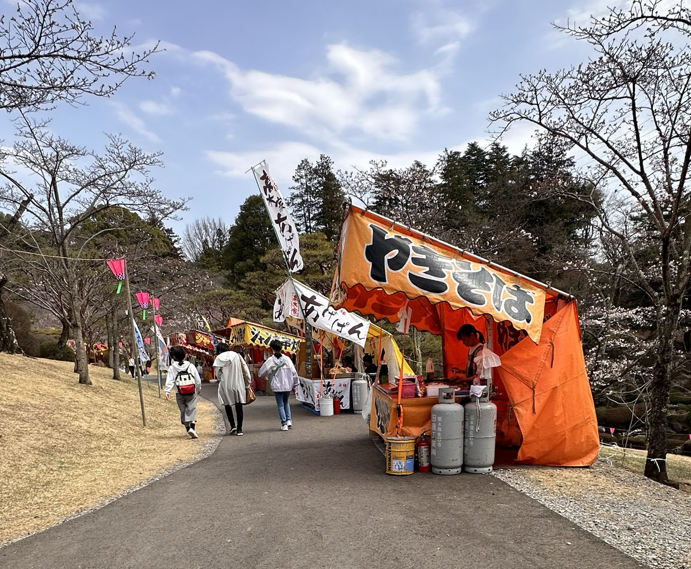
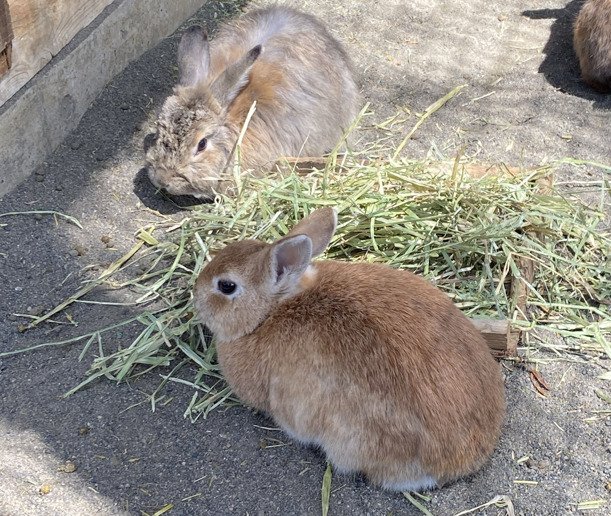
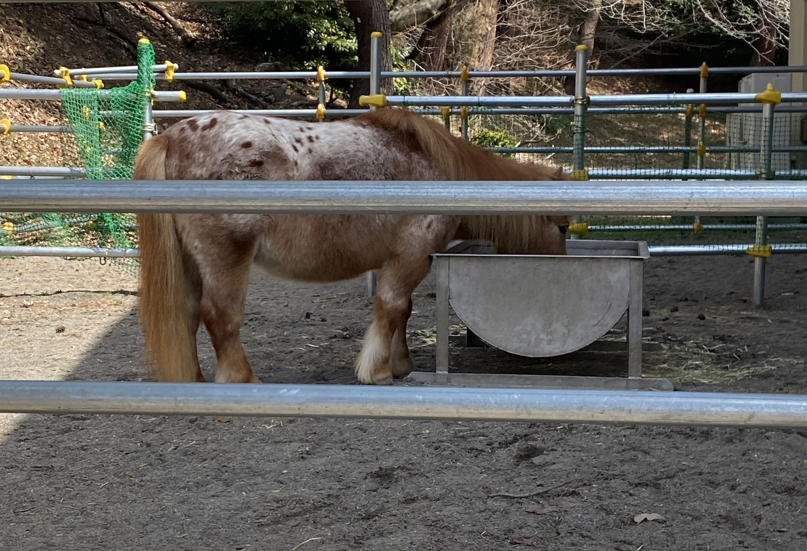

春の期間限定イベント

お花見期間…3/28(木)～4/7(日)
時間…宇都宮タワーの延長時間：午前9時～午後8時
ぼんぼり点灯と宇都宮タワーのライトアップ：午後6時～午後8時
その他…会食は少人数（4～5人）でお願いします。
公園内のバーベキュー、カセットコンロ・発電機等の使用、花火などの火気の使用は禁止です。
ゴミはお持ち帰りください。
期間中の周辺道路は大変混雑します。公共交通機関をご利用ください。
なお、期間中は臨時駐車場（約１０００台）があります。
イベント情報


2024/4/13
・ウサギとふれ合い・フアフアで遊ぼ（雨天中止）
・乗馬体験（雨天中止）